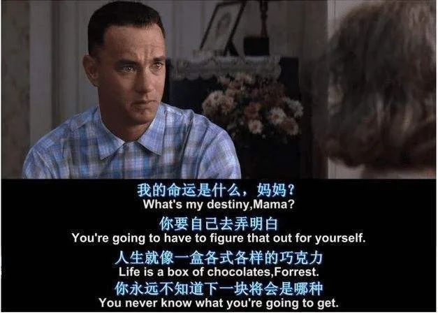

中年人的压力往往是累积而来的
前段时间，看到秋叶老师发的一条微博：
“今天老婆打的，的士司机主动给她说，刚刚上车的一个男的，在车上就哭起来了。
这个人年前还是一个企业高管，年薪三十多万，买了一套房，月供5000元。刚刚买了一辆车，月供7000元。
他本来想着今年可以大干一场，还清自己的房贷车贷，结果疫情还没有过去公司却倒闭了。
他现在找不到合适的工作，自己已经很久没找到工作，也不敢和家里人说，只能在出租车上大哭一场。”
人到中年，连崩溃都要挑好时间和地方。
大部分的普通人，到了中年，非但没有压力减轻，反而被生活压得喘不过气。
房贷、车贷、孩子的教育、老人的赡养，每一项都是压在肩头的责任。
一个意外、一场重病，就可能打破安稳的生活。
中年人很坚强，但要击垮却也很简单。
白岩松曾说：/strong>
“在中国最幸福的就是童年和老年，中年人却很惨。挣钱越来越少，身体越来越差，责任越来越重，父母在一夜之间变老，孩子还未长大。”
一段话，道破了中年生活的心酸与艰难。
作家刘亮程说：
落在一个人一生的雪中，我们不能全部看见，每个人都在自己的生命中，孤独地过冬。
是啊，人生不可能一帆风顺，有高峰自然有低谷。
年纪小的时候，最看不惯那些容易崩溃的大人，认为这实在太“怂”。
长大后才发现，那些低谷时，懂得适当认个怂，低个头的中年人，才是真正的强大。
要相信，那些打不倒我们的，终将使我们更强大。
今天，我想和大家分享5种自渡的方法，带你走过低潮，做自己的摆渡人。
1.宣泄
一天深夜， 某医生正处于熟睡中，却被一个陌生妇女的电话吵醒了。
还没等医生开口，这位妇女就开始抱怨起来：“我恨透他了！”
“他是谁？”医生问。
“他是我的丈夫！”医生感到突然，于是礼貌地告诉她:“你打错电话了。”
但是，这位妇女好像没听见似的，继续说个不停：
“我一天到晚照顾四个小孩，他还以为我在家里享福。有时候我想出去散散心，他却不肯，而他自己天天晚上出去，说是有应酬，谁会相信......”
尽管这位医生一再打断她的话，告诉她，他并不认识她，但是她还是坚持把自己的话说完。
最后，她对这位素不相识的医生说：
“您当然不认识我，可是这些话已被我压了很久，现在我终于说出来了，舒服多了，谢谢您，对不起，打搅您了。”
什么是宣泄？就是把过去受到的心理创伤、不幸遭遇和所感受到的情绪，通过适当的方式发泄出来，以达到缓解和消除消极情绪的目的。
每个人在生活中都会遇到过不平、委屈、失意等不如意的事情，产生各种各样的情绪。
如果任由负性情绪积累，硬生生地短期压制，不及时宣泄，累积到一定程度就会爆发。
成年人，真的没必要过于追求所谓的坚强，难受的时候哭出来，才能更好地投入到工作和生活中。
因为宣泄的过程，也是你自我安慰、自我放松、自我调节的过程。
当你懂得了合理地进行宣泄，也就掌握了摆脱负性情绪、精神压力和消极心理的有效途径。
2.存肢效应
一个坐在火车窗口座位的老人，不慎从窗口掉了一只刚买的鞋子。老人不假思索地将另一只鞋也扔向了窗外。
旁边一人不解地询问其原因，老人解释说：
“我只剩一只鞋也不能穿，把它也扔了出去，让捡到它们的人拥有一双。假如我们一人一只，那鞋子就没有了价值。”
老人的行为看起来反常，但这恰恰体现了存肢效应的核心观念。
存肢效应，是一种生理现象：一个健康的人，如果突然断了只胳膊，在伤口愈合后很长一段时间里，80%以上的截肢者，对失去的肢体，还会有存在感和支配欲。
基于此，也引申喻指一种心理现象，意即：
人在失去以后，在心理上，面对那个空落的位置，也会有存在感和支配欲。
《大话西游》有一段经典台词，描述的就是这个现象：
“曾经有一段真挚的感情摆在我面前，我却没有珍惜，等到失去后才追悔莫及。人世间最痛苦的事莫过于此。”
生活中，很多人都难以摆脱存肢效应带来的影响。
比如说，刚退下来的领导，因为无法面对改变而充满失落；
比如说，失去老伴的老人，因为无法应对空缺而孤独难耐；
比如说，没有抓住发展机遇，被失败击倒而感到郁郁寡欢；
......
但实际上，沉溺于痛苦本身，只会将痛苦越养越大。
生活中的每个人，其实都是不断在失去，同时，也不断在获得。
区别在于，你是沉迷过去，不敢面对现实，还是说坦然面对失去，从中汲取勇气，把握现在。。
世间最珍贵的不是“得不到”和“已失去”，而是能把握的现在。
3.自我损耗
看过一个有趣的实验。
研究人员希望测试出，吃不同的食物后，对于解难题有什么影响，就做了一个关于“小萝卜与巧克力饼干”的解题实验。
具体过程如下
实验人员将实验参与者聚集在一个房间里，而房间里充斥着刚刚出炉的巧克力饼干的香味，桌子上分别放着一盘巧克力饼干和一盘小萝卜。
当实验人员离开房间时，他们让两组参与者品尝他们面前的食物，一组只吃萝卜，另一组只吃巧克力饼干。
一段时间后，两组参与者被要求完成同一个无解的智力问题。
当实验人员测量他们在解决难题上花费的时间时发现：
吃了巧克力饼干的参与者会在19分钟后放弃解答，而被迫控制自己只能吃小萝卜的实验组表现糟糕，8钟后就放弃了尝试。
这就是自我损耗，指的是：一个人进行一段意志活动后，自我进行意志活动的能力或者意愿暂时下降。
自我损耗的核心是，自我意志活动依赖一种有限的心理能量。
由于心理能量有限，当前一个意志消耗部分甚至是多数心理能量时，会对后续的意志活动造成负面影响。
工作和生活中，有很多低价值的自我消耗行为：
比如说，进了大学校门，还没有好好读几本书，就烦恼毕业找不到工作怎么办。
比如说，步入了职场，还没有熟练手头的业务，就担忧今后某一天失业怎么办。
比如说，走进婚姻殿堂，没有多花心思用心经营，一些小事就忧心离婚怎么办。
这种常见的、无意义的悬想（凭空想象），是一种严重的自我损耗。
它带来的负性情绪，会将我们的精力慢慢消耗，让明媚的梦想最终化为凄凉的空想。
因此，当我们察觉到无意义的悬想的危害时，就要注意识别，及时提醒自己进行视角切换。
去做一些让自己开心的事，转移注意力，降低自我损耗，提高理性认知能力。
4.钝感力
《功夫熊猫》中的熊猫阿宝，总是穿着一条破裤衩，职业是面馆的店小二，最大的技能就是把面条放在胳膊上。
就是这样一只傻乎乎的笨熊猫，最后竟然成为了给大家带来和平的龙之武士。
而阿宝的特征便是：随时随地都拥有好心情，瞄准一个目标之后，将所有打击与嘲笑都置之度外。
《士兵突击》里的许三多，是个有着性格缺陷的农村孩子，迟钝、老实、懦弱、缺心眼、一根筋，经常被周围的人轻视、嘲笑、欺负。
但他对于周围人们的冷嘲热讽，却很少放在心上，总是露出憨厚的笑容，对认定的事情非常执着。
在刚刚入伍时，他是人人眼中的“孬兵”，最后却出人意料地成为了“兵王”。
《阿甘正传》里的阿甘，智商仅为75，因为他的迟钝，时常被人嘲笑、欺负。
然而，他却比常人做起决策来更果断，行动力更强，面对挫折更有韧性。
最后，因为他的迟钝，收获了友情、爱情，稀里糊涂地成为了百万富翁。

通常，我们会认为迟钝是一个“不好的”词，但就像美国一位心理学家曾说：
有限度的迟钝，对于引发个人的创造力、导致事业成功，以及建立良好的人际关系等，都有益处。
这，就是钝感力的强大力量。
钝感力，指的是：一种排除周围干扰、勇往直前的态度，强调的是对困境的一种耐力。
渡边淳一说：“世界上不仅仅存在敏锐聪慧这种才能，相较之下，不为逆境、挫折所动摇的钝感，才是生活中最为重要的才能。”
如果能做到这一点，钝感力就成为逆商，能够帮助我们突破重重障碍，步步向前，最终实现自己的梦想。
5.向死而生
美国“9·11”袭击，遇难者近3000人。
陈思进，是幸存者之一。
灾难发生的当天，他逃出世贸大厦后不到3分钟，大楼就轰然坍塌。
与他同行的300余人，成为最后一批逃出世贸双塔的幸存者。
事故发生后，陈思进开始回首人生，终于发现自己的内心，在“贪婪”的华尔街得不到安宁。
他不愿再做一个“赚钱机器”，而是重拾童年的作家梦，开始关注财经文化，并选择开启中文写作的生涯。
随着《金融让谁富有》、《绝情华尔街》等多部财经类畅销书的出版，陈思进完成了从证券公司副总裁到金融作家的角色转变。
实现了自身定位的“成功”：靠自己喜欢的职业谋生，并做出成绩。
陈思进说：“人生不一定有明天！只要还活着，想做什么，就应该抓紧时间去做！
生命、亲情、爱情、友情太珍贵了……物质追求已经没有什么特别大的意义了，真正做自己喜爱做的事情，才能拥有幸福的人生。”
这，就是向死而生的活法。
我们每一个人都畏惧死亡，因此本能地会回避死亡，回避与死亡相关的话题。
通常，只有那些濒临死亡又侥幸逃生的人，才会认真去思考死亡，以及生命的意义。
但是，在生命的上坡时期，适宜思考下坡的问题；早一点思考，会比迟一点思考好。
因为直面死亡，你才会知道真正想要的是什么。
鲁豫在《偶遇》中说：
“无论是谁，我们都曾经或正在经历各自的人生至暗时刻，那是一条漫长、黝黑、阴冷、令人绝望的隧道。”
成年人的世界，低潮在所难免，悲欢只能自渡。
当你遇到人生中的至暗时刻，强大的自愈能力，才能让你走得更稳、更快。
《功夫熊猫》中的熊猫阿宝，总是穿着一条破裤衩，职业是面馆的店小二，最大的技能就是把面条放在胳膊上。
就是这样一只傻乎乎的笨熊猫，最后竟然成为了给大家带来和平的龙之武士。
而阿宝的特征便是：随时随地都拥有好心情，瞄准一个目标之后，将所有打击与嘲笑都置之度外。
《士兵突击》里的许三多，是个有着性格缺陷的农村孩子，迟钝、老实、懦弱、缺心眼、一根筋，经常被周围的人轻视、嘲笑、欺负。
但他对于周围人们的冷嘲热讽，却很少放在心上，总是露出憨厚的笑容，对认定的事情非常执着。
在刚刚入伍时，他是人人眼中的“孬兵”，最后却出人意料地成为了“兵王”。
《阿甘正传》里的阿甘，智商仅为75，因为他的迟钝，时常被人嘲笑、欺负。
然而，他却比常人做起决策来更果断，行动力更强，面对挫折更有韧性。
最后，因为他的迟钝，收获了友情、爱情，稀里糊涂地成为了百万富翁。
通常，我们会认为迟钝是一个“不好的”词，但就像美国一位心理学家曾说：
有限度的迟钝，对于引发个人的创造力、导致事业成功，以及建立良好的人际关系等，都有益处。 这，就是钝感力的强大力量。
钝感力，指的是：一种排除周围干扰、勇往直前的态度，强调的是对困境的一种耐力。
渡边淳一说：“世界上不仅仅存在敏锐聪慧这种才能，相较之下，不为逆境、挫折所动摇的钝感，才是生活中最为重要的才能。”
如果能做到这一点，钝感力就成为逆商，能够帮助我们突破重重障碍，步步向前，最终实现自己的梦想。
5.向死而生
美国“9·11”袭击，遇难者近3000人。
陈思进，是幸存者之一。
灾难发生的当天，他逃出世贸大厦后不到3分钟，大楼就轰然坍塌。
与他同行的300余人，成为最后一批逃出世贸双塔的幸存者。
事故发生后，陈思进开始回首人生，终于发现自己的内心，在“贪婪”的华尔街得不到安宁。
他不愿再做一个“赚钱机器”，而是重拾童年的作家梦，开始关注财经文化，并选择开启中文写作的生涯。
随着《金融让谁富有》、《绝情华尔街》等多部财经类畅销书的出版，陈思进完成了从证券公司副总裁到金融作家的角色转变。
实现了自身定位的“成功”：靠自己喜欢的职业谋生，并做出成绩。
陈思进说：“人生不一定有明天！只要还活着，想做什么，就应该抓紧时间去做！
生命、亲情、爱情、友情太珍贵了……物质追求已经没有什么特别大的意义了，真正做自己喜爱做的事情，才能拥有幸福的人生。”
这，就是向死而生的活法。
我们每一个人都畏惧死亡，因此本能地会回避死亡，回避与死亡相关的话题。
通常，只有那些濒临死亡又侥幸逃生的人，才会认真去思考死亡，以及生命的意义。
但是，在生命的上坡时期，适宜思考下坡的问题；早一点思考，会比迟一点思考好。
因为直面死亡，你才会知道真正想要的是什么。
鲁豫在《偶遇》中说：
“无论是谁，我们都曾经或正在经历各自的人生至暗时刻，那是一条漫长、黝黑、阴冷、令人绝望的隧道。”
成年人的世界，低潮在所难免，悲欢只能自渡。
当你遇到人生中的至暗时刻，强大的自愈能力，才能让你走得更稳、更快。